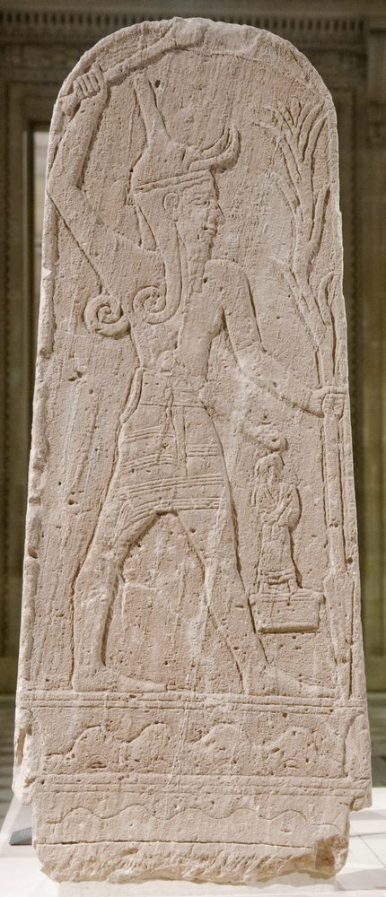

Las personas, los lugares y los oficios que la traducción ha alcanzado, cada entrada enlazada a los versículos donde aparece. 5 de 306 entradas están ya escritas en español.
Esta página crece capítulo a capítulo. Solo se muestran las entradas que ya tienen texto español; nada se rellena con inglés.
El pueblo natal de Jeremías, a unos 5 km al nordeste de Jerusalén, en territorio de Benjamín — una aldea sacerdotal (Josué 21:18), lo que explica la primera línea del libro: «de los sacerdotes que estaban en Anatot». ⚠ Que el profeta venga de una familia sacerdotal da filo a su pleito con el templo: no es un forastero atacando una institución ajena, sino alguien de dentro. Sus propios vecinos de Anatot conspiran contra él (11:21), y años más tarde, con la invasión ya encima, comprará un campo allí como señal de que habrá regreso (32:6-15).
La gran ciudad del Éufrates, en la llanura de la actual Irak, y el imperio que Jeremías nombra como el instrumento del juicio sobre Judá. Bajo Nabucodonosor II tomó Jerusalén, quemó el templo y se llevó cautivo al pueblo en 587 a. C. ⚠ Jeremías hace las dos cosas a la vez: anuncia que Babilonia vendrá y que hay que someterse a ella, y anuncia también que Babilonia misma caerá (capítulos 50-51) — lo que le costó ser tratado como traidor por unos y como falso profeta por otros. Mucho después, el Apocalipsis convierte el nombre en una cifra.
La ciudad en el centro de la Biblia hebrea: capital de David, sede del templo, y — en Jeremías — la ciudad cuya destrucción el profeta pasó cuarenta años anunciando. Está en la cresta de las montañas de Judá, a unos 750 m de altura, con el valle del Cedrón al oriente y el valle de Ben-Hinom al sur y al occidente. ⚠ Ese segundo valle importa para el capítulo del alfarero: por allí salía la Puerta de los Tiestos, junto a los talleres de cerámica y sus vertederos, y allí estaban los lugares altos donde se quemaban niños (Jeremías 19:2, 5). El nombre griego de ese valle, Gehena, se volvió una palabra para el juicio. Cayó ante Babilonia en 587 a. C., como Jeremías había dicho.
El dios de la tormenta de los cananeos y fenicios, y el rival que los profetas hebreos nombran más que a ningún otro. Ba'al es un sustantivo hebreo corriente antes de ser un nombre — «dueño, señor, marido» —, y los profetas lo aprovechan: Oseas hace decir a Dios que Israel lo llamará «mi marido» y «ya no me llamará mi Baal» (2:16). Como dios es HADAD, señor de la lluvia, del trueno y de la fertilidad de los campos, con el título de «el que cabalga sobre las nubes»; su padre es El, su hermana y consorte Anat, y sus enemigos Yam (el Mar) y Mot (la Muerte). ⚠ El Salmo 68:4 da «el que cabalga sobre las nubes» a Jehová — la Biblia toma el epíteto propio del dios de la tormenta y lo reasigna.
La arqueología. Casi todo lo que sabemos del culto de Baal desde el lado de sus PROPIOS adoradores viene de un hallazgo: en 1928 el arado de un campesino dio con una tumba en Minet el-Beida, en la costa siria, y la excavación desde 1929 bajo CLAUDE SCHAEFFER sacó a la luz la ciudad de UGARIT (Ras Shamra) y su archivo — tablillas de barro en un cuneiforme alfabético hasta entonces desconocido, escritas c. 1400–1200 a. C., entre ellas los poemas que hoy se llaman el CICLO DE BAAL. Antes de Ugarit, Baal se conocía sobre todo por la polémica de sus adversarios. ⚠ Pero hay que decir la distancia: Ugarit es del Bronce Final y está a unos 400 km al norte de Jerusalén, mientras Jeremías es del Hierro en Judá, cinco siglos después; el culto cambió, y las tablillas describen su forma siria, no la de Judá. Objetos: figurillas de bronce del «dios que golpea» — un varón a zancadas con el brazo alzado — aparecen por todo el Levante, y una célebre estela de piedra caliza de Ugarit (hoy en el Louvre) muestra al dios con la maza en alto y una lanza cuya punta baja como un rayo. ⚠ Identificar una figurilla concreta como Baal EN PARTICULAR es casi siempre una inferencia iconográfica, no algo inscrito en el objeto.
En qué consistía el culto. Lugares altos (bamot), piedras erguidas, altares e incienso — la acusación de Jeremías es «quemar incienso a Baal» (7:9) — y, como lo declara la Biblia, sacrificio de niños por fuego en Tofet, en el valle de Ben-Hinom (19:5; 32:35 sitúa allí «los lugares altos de Baal»). El desafío de Elías en el Carmelo está construido como polémica contra el dios de la tormenta: las pruebas son FUEGO y luego LLUVIA, lo propio de Baal, y él no da ninguna de las dos. Dos hallazgos quedan cerca de la puerta de Jeremías. Miles de FIGURILLAS DE PILAR JUDAÍTAS — una cabeza femenina moldeada sobre un cuerpo en forma de pilar — salen de casas corrientes de Judá de los siglos VIII y VII, Jerusalén incluida: religión doméstica exactamente en el siglo de Jeremías; ⚠ para qué SERVÍAN (¿Aserá? ¿un amuleto de fertilidad? ¿un exvoto?) está genuinamente discutido. Y las inscripciones de KUNTILLET AJRUD (c. 800 a. C., en el Sinaí) dicen «Jehová de Samaria y su aserá» — la cara epigráfica de la componenda que los profetas atacan; ⚠ si «su aserá» significa la diosa o un objeto de culto de madera sigue sin resolverse. El Tofet de Jerusalén nunca se ha identificado con seguridad en el terreno. Los tofets fenicios y púnicos — Cartago sobre todo, con Motia, Sulcis y Tharros — sí contienen miles de urnas con huesos incinerados de niños y de animales, la evidencia física más fuerte de la práctica en todo el mundo fenicio; ⚠ y su lectura está ferozmente discutida: algunos especialistas los toman por cementerios de niños muertos por causas naturales, y los estudios dentales y esqueléticos de edad se argumentan en los dos sentidos. Esta biblioteca no emite un voto.
⚠ Nota para Jeremías 18. Baal NO se nombra en el capítulo de la casa del alfarero. Solo dice que el pueblo «quema incienso a la nada» (18:15), la abreviatura habitual de los profetas para un ídolo. El dios se nombra a un lado y al otro — 2:8, 19:5, 23:13, 32:29-35 — así que la identificación es razonable, pero son los capítulos vecinos los que aportan el nombre, no este.

El oficio más común del mundo antiguo, y el que los profetas usan más a menudo cuando quieren decir algo sobre Dios y una nación. La cerámica es también lo más abundante que los arqueólogos desenterran en el Levante — el barro cocido es prácticamente inmortal bajo tierra —, y por eso la datación relativa de casi todo yacimiento descansa en la tipología cerámica: el perfil del borde de una olla puede fechar un suelo. ⚠ La fuerza de la metáfora está casi toda en el PROCEDIMIENTO, así que vale la pena saber cómo se hacía el trabajo.
Cómo se trabajaba. El barro se excavaba, se remojaba y se dejaba reposar para que la arenilla y las piedrecillas se fueran al fondo; luego se AMASABA — con las manos o con los pies — para sacarle el aire. Esa preparación no es esmero: una bolsa de aire atrapada o una piedra sin notar es precisamente lo que hace que una vasija salga mal después, torciendo la pared bajo la mano o reventándola en el horno. El barro se torneaba sobre lo que el hebreo llama ovnayim (Jeremías 18:3), un DUAL que significa literalmente «las dos piedras»: una piedra inferior girada con la mano o el pie que mueve una piedra superior sobre un pivote. Se han excavado pares de piedras de torno de esta clase en yacimientos del Levante, junto con hornos y los vertederos de piezas mal cocidas que los especialistas llaman «desechos de horno» — el residuo físico de una vasija «estropeada en la mano del alfarero». La cocción rondaba los 700–1000 °C. ⚠ El ÚNICO otro lugar donde aparece ovnayim en la Biblia es Éxodo 1:16, donde es la SILLA DE PARTOS. Y como el oficio necesita yacimientos de barro, agua y combustible, y como un horno es un peligro de humo y fuego, los talleres se situaban en el borde de la ciudad — por eso Jeremías es enviado ABAJO a la casa del alfarero (18:2) y luego afuera, a la Puerta de los Tiestos (19:2).
Por qué la imagen encaja. Tres cosas a la vez. El alfarero tiene AUTORIDAD total sobre el terrón — pero no lo está destruyendo, lo está haciendo bien; el barro estropeado se rehace, no se castiga. Una vasija es ÚTIL, no ornamental: existe para contener algo. Y — la parte que sostiene Jeremías 18 — el barro RESISTE de verdad: una piedra o una burbuja en el material realmente se niega a la forma, y por eso el oráculo construido sobre la imagen es condicional («si esa nación se vuelve», 18:8) y no fatalista. ⚠ Sobre todo, el oficio tiene un PLAZO. El barro húmedo puede aplastarse y volver a tornearse cuantas veces se quiera; el barro cocido nunca puede rehacerse, solo romperse. Ese único hecho físico es toda la diferencia entre las dos señales seguidas de Jeremías: el capítulo 18 es barro blando rehecho en el torno, y el 19 es una vasija COCIDA quebrada «de modo que no se pueda remendar más» (19:11). La ventana para rehacer es la ventana anterior al horno.
{kind=link}